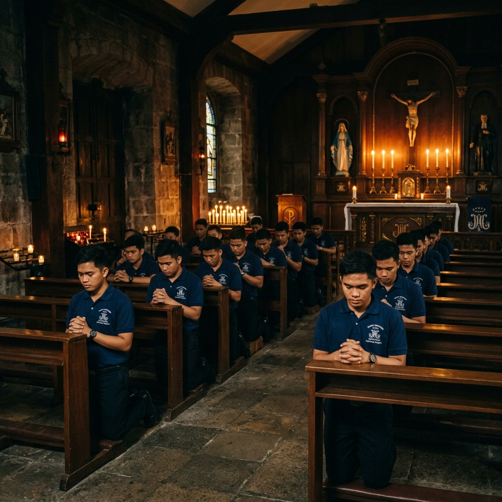
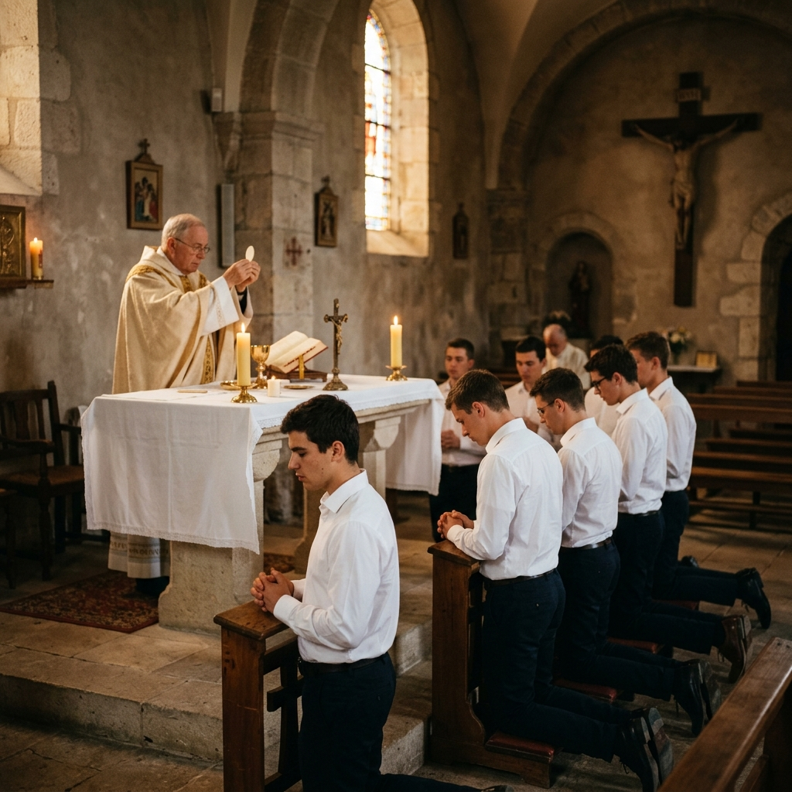
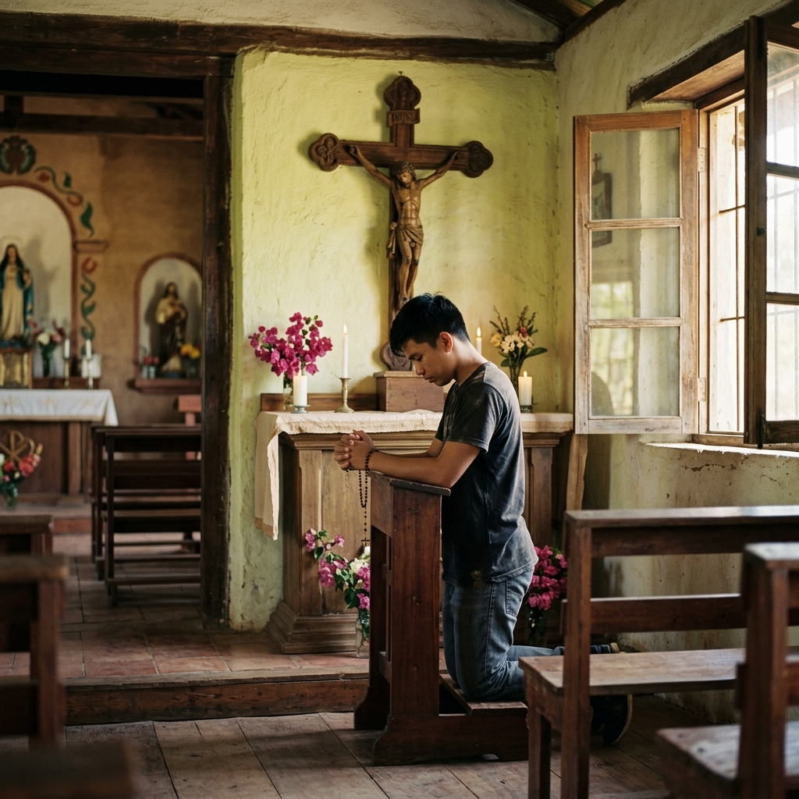
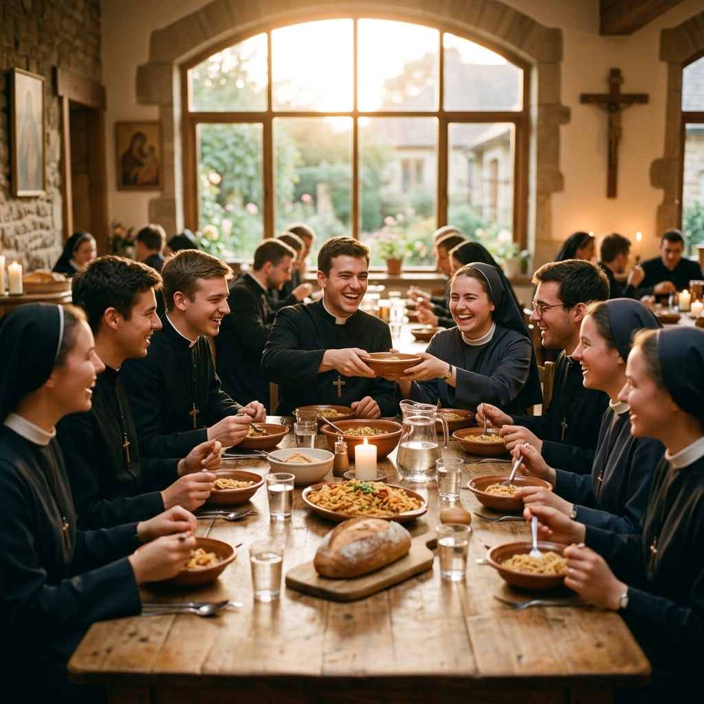
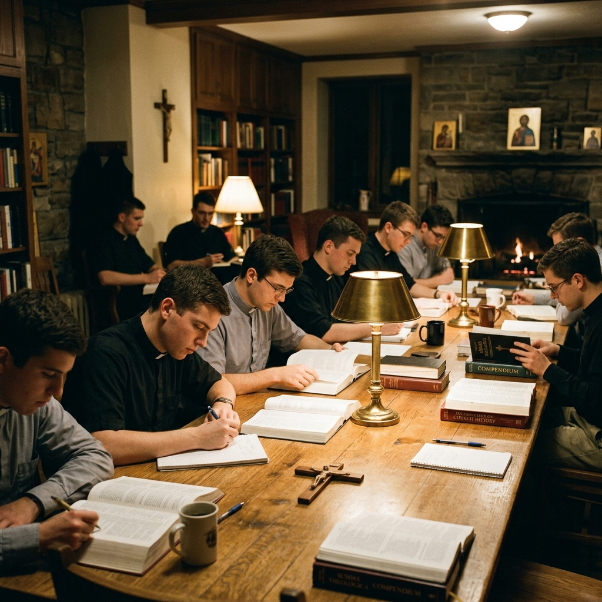
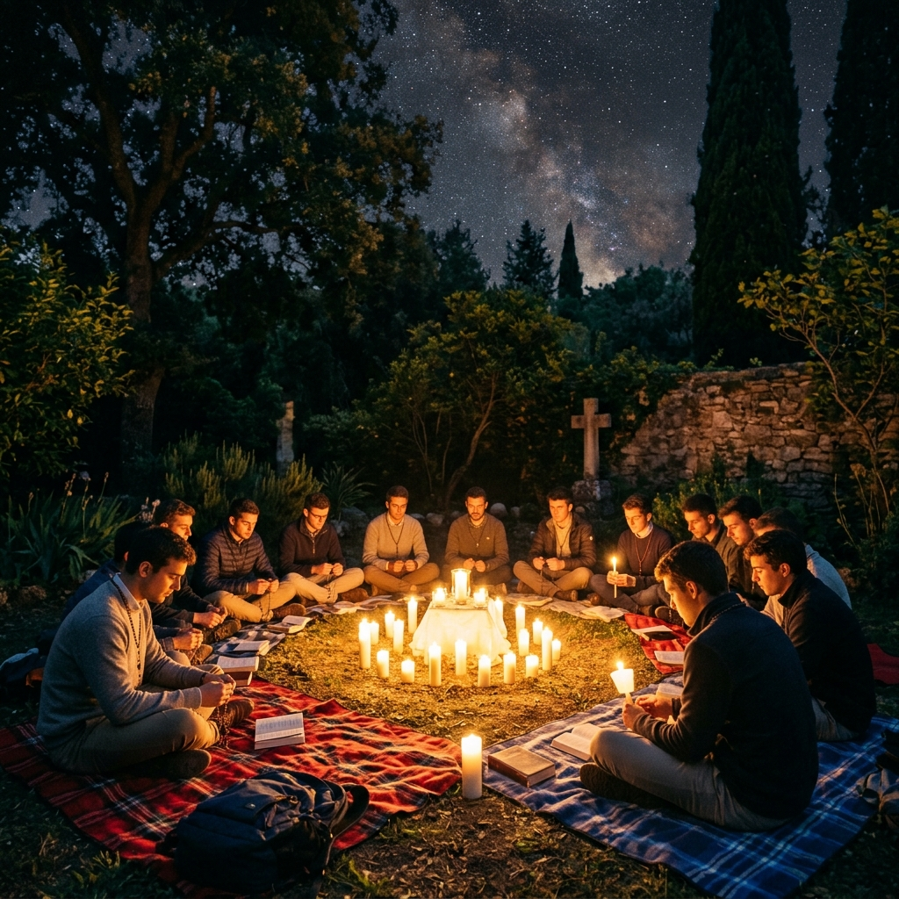
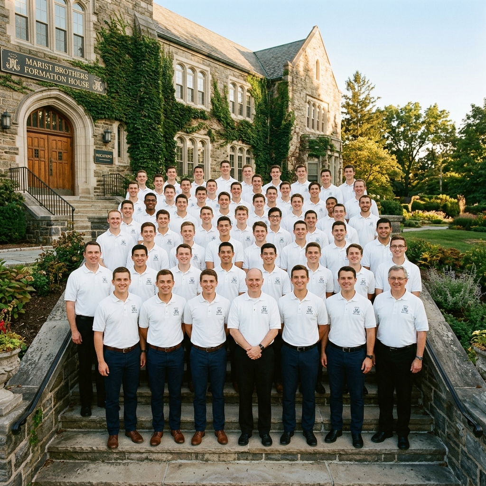
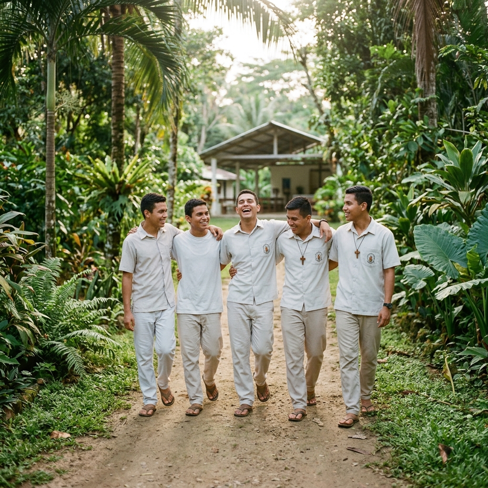
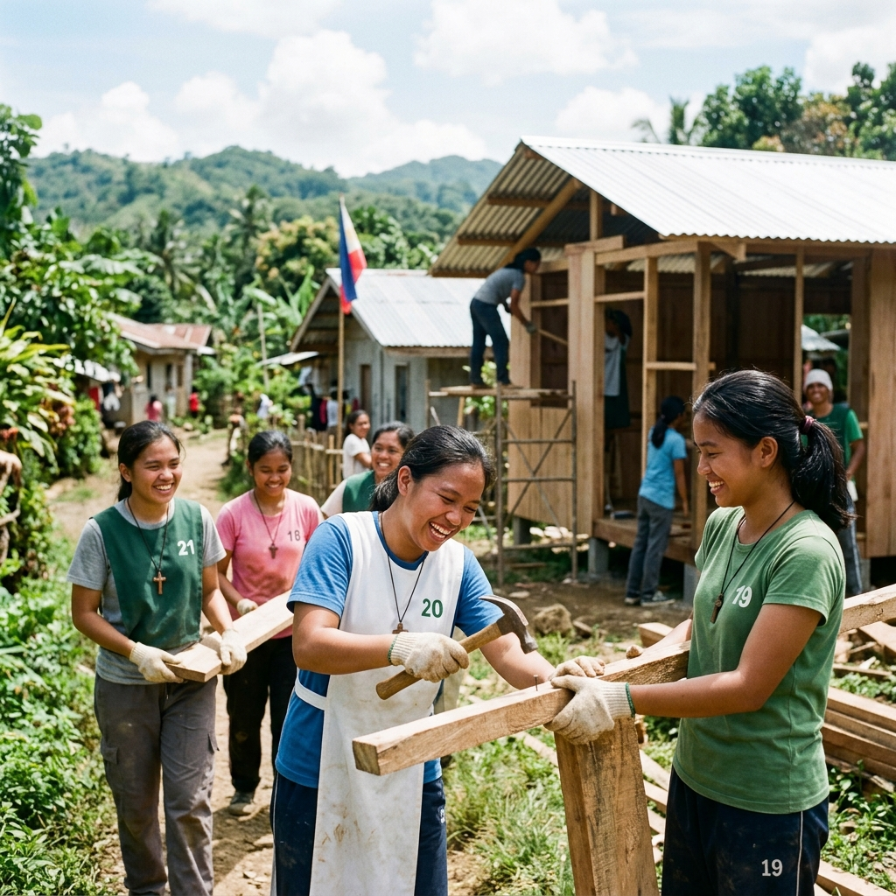
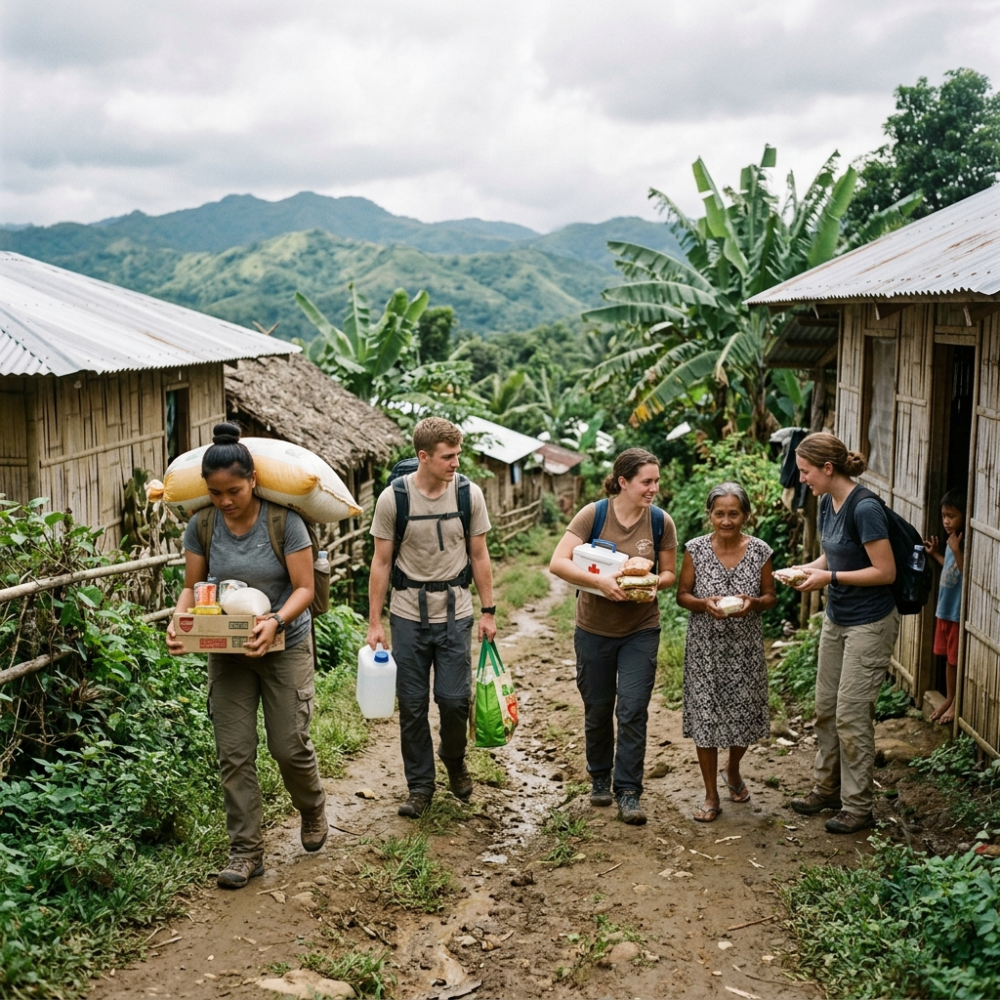

Sacred Threshold
Novitiate Formation
A Year of Deep Formation
and Sacred Consecration
The Novitiate is a canonical year of intensive spiritual formation that marks a candidate's formal entry into the Marist Brothers. It is a year set apart from ordinary apostolic work — a time for deep prayer, reflection, and interior transformation in the spirit of Marcellin Champagnat.
Guided by a Novice Master and the formation team, novices study the Rule and Constitutions of the Marist Brothers, the spirituality of St. Marcellin Champagnat, the theology of religious life, and the Scriptural foundations of the Marist vocation.
2 Years
Duration
3 Vows
Professed
730 Days
of Grace
Currently Forming
Formands of 2024–2025
The Sacred Curriculum
Elements of Formation
Each element of Novitiate formation is a facet of light — contributing to the full radiance of a life consecrated to God.
Contemplative Prayer
Long hours of personal and communal prayer form the radiant heart of novitiate life — Lauds at dawn, Mass, Lectio Divina, Adoration, and Night Prayer — each deepening the novice's intimate relationship with Christ.
Marist Spirituality
In-depth study of the Marist charism, the life and letters of Champagnat, and the spiritual roots of our international institute. The novice is immersed in Mary's way of living and proclaiming the Gospel.
Religious Vows
At the end of this sacred year, the novice professes public vows of poverty, chastity, and obedience before God and the Church — becoming, at last, a Brother of the Marist Schools.
Consecrated Servants
Meet Our Novices
These young men have answered the call. In the silence of the Novitiate, they are being shaped — not by the world, but by the Spirit — into Brothers for the Church and for the young.
[Novice Full Name]
[Country of Origin]
[A short personal intro about this novice — his background, what he loves, and what drew him to the Marist life.]
[Novice Full Name]
[Country of Origin]
[A short personal intro about this novice — his background, what he loves, and what drew him to the Marist life.]
[Novice Full Name]
[Country of Origin]
[A short personal intro about this novice — his background, what he loves, and what drew him to the Marist life.]
In Their Own Words
Voices & Reflections
The Novitiate is not merely a program — it is an encounter. These are the words of those who have lived it, words born from silence, shaped by prayer, and offered with reverence.
"[The novitiate] taught me that silence is not the absence of God — it is where He speaks most clearly. My greatest struggle became my greatest gift."
[Novice Full Name]
Novice · 2024–2025
"Every morning in the Novitiate began before the sun. We rose, we prayed, we sat in that holy stillness before the Tabernacle. I began to understand that I was not here to do great things — I was here to let God do great things through me."
[Novice Full Name]
1st Year Novice · Featured
"Community life showed me that holiness is not a solo project. I have learned more about God from my brothers' kindness — and even their imperfections — than from any book."
[Novice Full Name]
Novice · 2024–2025
Sacred Moments
Novitiate in Pictures
A glimpse into the quiet rhythm of a year lived entirely for God — captured in light and shadow, silence and song.











Novitiate House · General Santos City
Formation & Consecration · April 2025
"The Year That Changed Everything — In Silence, I Found My Voice"
The Novitiate is unlike anything else in religious life. It is not a classroom, not a monastery, not a retreat — it is all three, simultaneously. In this immersive year, three young men share what it truly means to die to oneself and rise as a Marist Brother.
Through predawn prayers, communal meals, spiritual direction, and apostolic exposure, they encounter themselves — their fears, their gifts, their capacity for God — with a clarity that only sacred silence can bring.
Continue the Journey